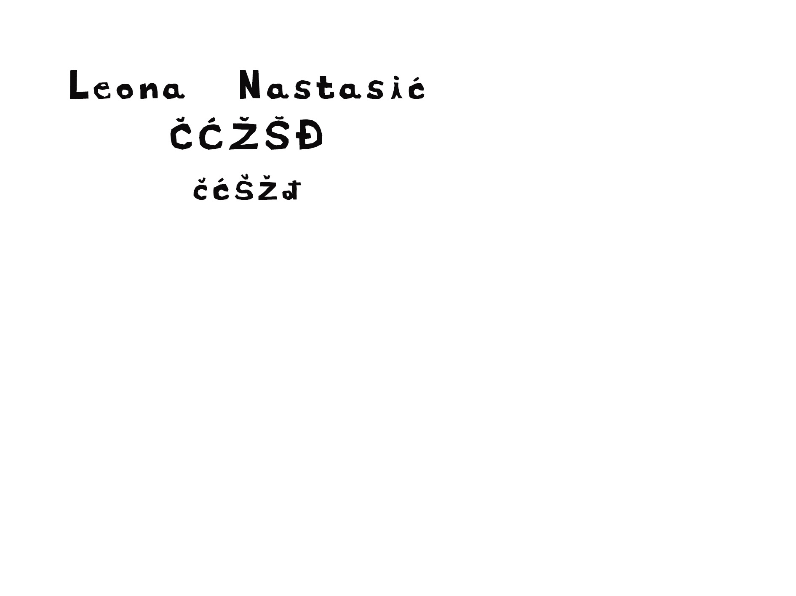
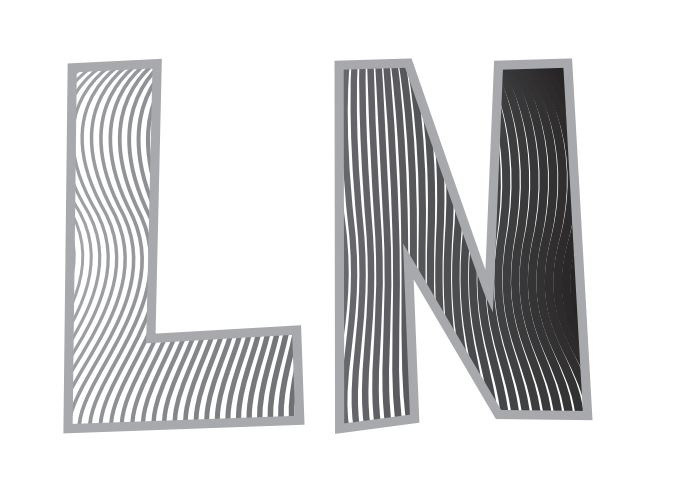
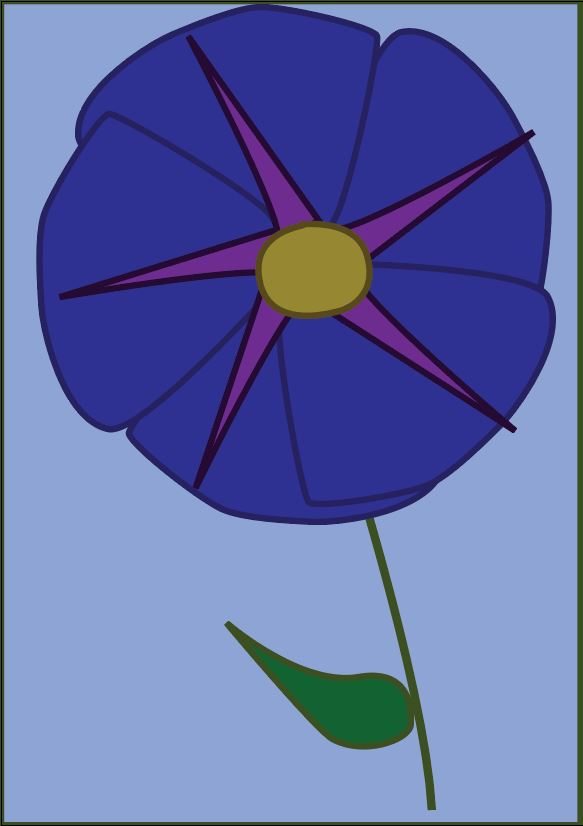
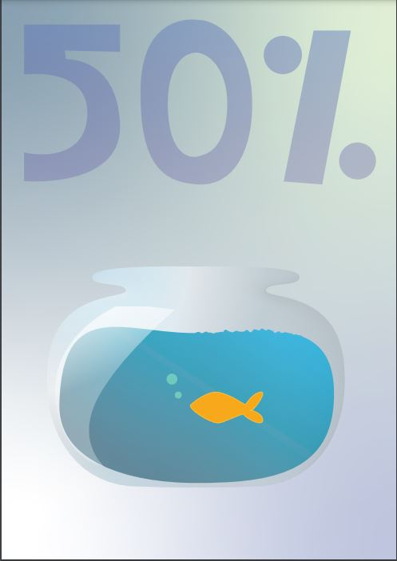
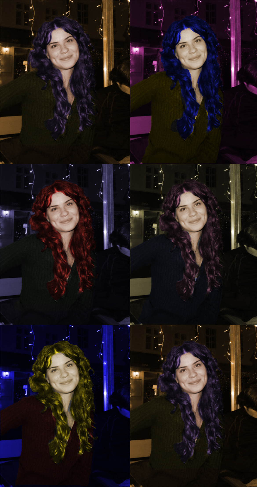
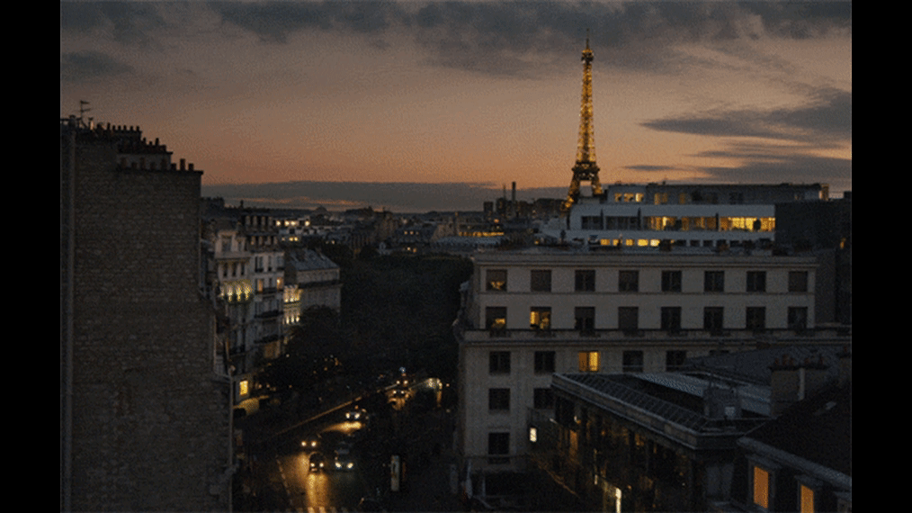
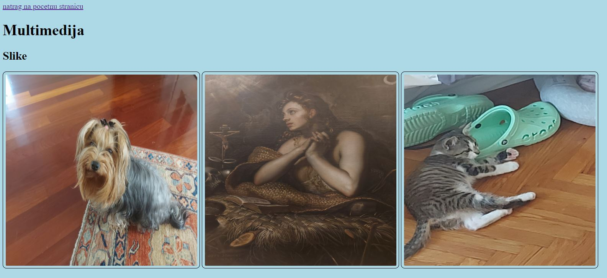

Vježba 1 - font
Vježba 2 - Bezierova krivulja, precizno crtanje
Vježba 3 - boja, transformacije

U ovoj vježbi stvarala sam svoj font za slova svojeg imena i prezimena te posebnih znakova poput slova s kvaćicama.

Ova vježba sastojala se od crtanja Bezierovih krivulja unutar mojih inicijala.

U ovoj vježbi sam izradila cvjetić pomoću oblika za koje sam koristila rotate i scale tool
Vježba 4 - gradijent, transparencija
Vježba 5 - retuširanje
Vježba 6 - koloriranje

Izrađivala sam poster za sniženje ribica koristeći različite gradijente.

Na slici sam popravljala neke nesavršenosti.

U ovoj vježbi sam mijenjala boje odreenih elemenata sa slike.
Vježba 7 - fotomontaža
Vježba 8 - cinemagraf
Vježba 9 - video obrada

U ovoj vježbi sam izrezivala elemente sa slika i ubacivala ih u primarnu sliku.

U ovoj vježbi radila sam kinemagraf, gif u kojemu se jedan dio pomiče dok je drugi statičan.
Vježba 10 - web stranica u HTML-u

U ovoj vježbi izradila sam web-stranice za prikaz multimedijskih sadržaja.